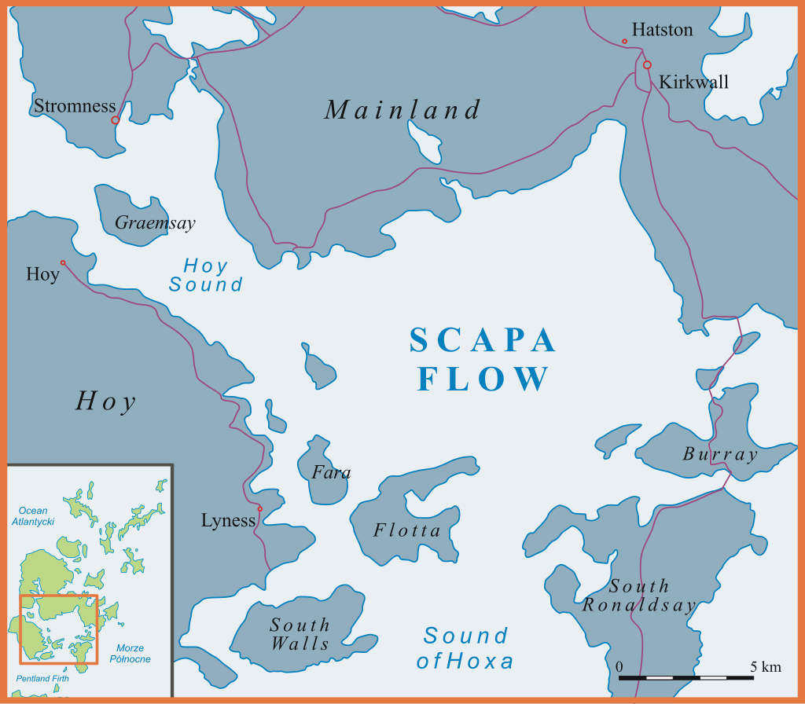
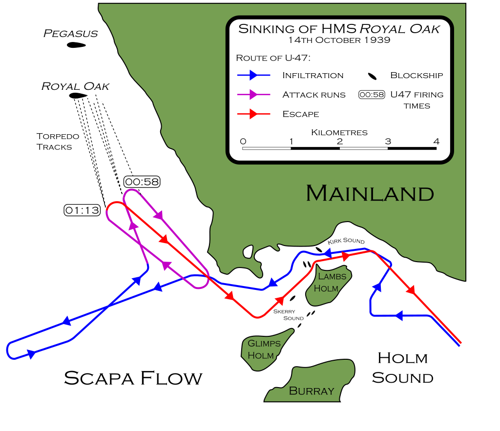
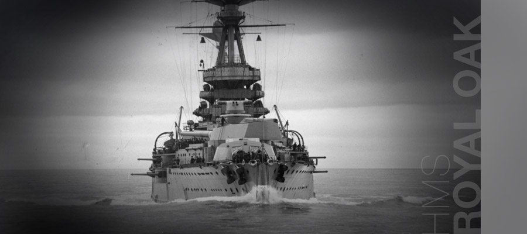
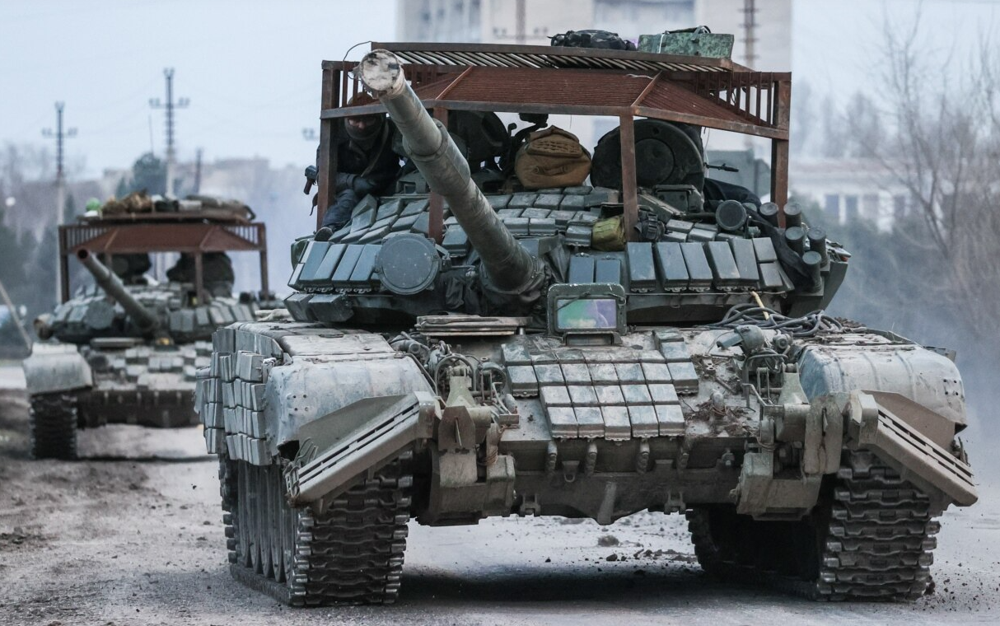
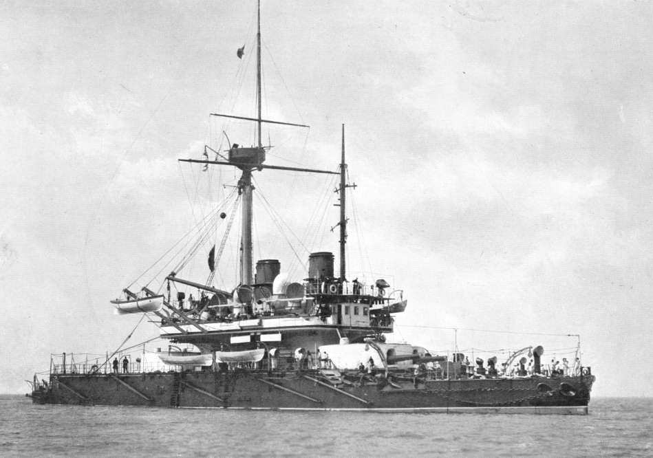
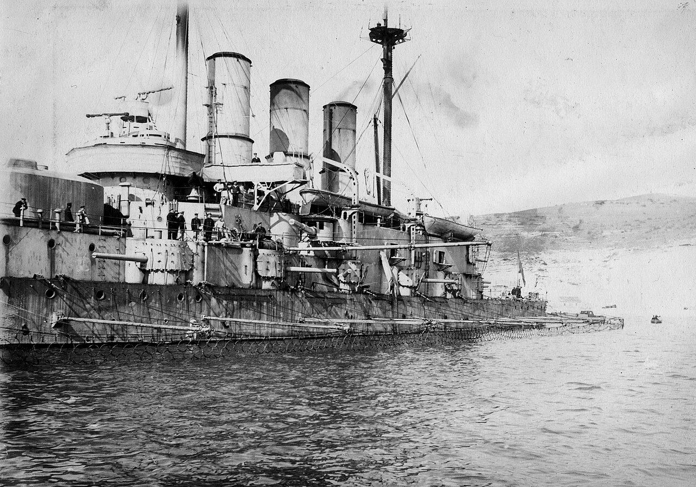
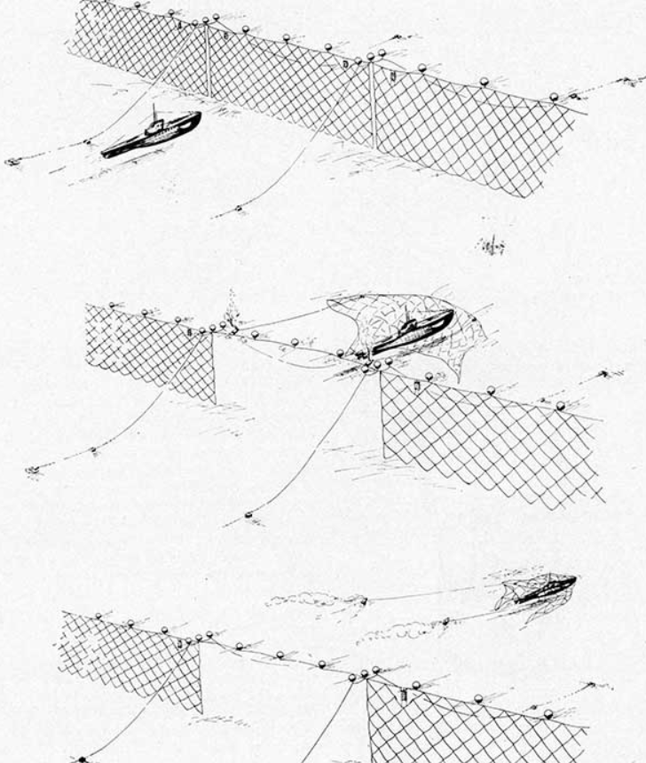

WW2 중 항모에서의 야간 작전 (12) - 어뢰 방어망은 대체 왜?
게시: 2025-05-08T06:30:32+09:00
<역시나 이탈리아 애들이 게을러서?> 정찰기로 개조된 경폭격기 Martin Maryland 3대가 번갈아가며 열심히 찍어온 타란토의 항공 사진을 분석하면서 분석관들이 유심히 살펴본 것은 방파재와 섬 등 지형은 물론 군함들의 정박 위치와 척수, 그리고 대공포와 탐조등 진지들의 위치 등등. 또 군함들, 특히 주목표물인 전함들 주변에 둘러쳐 있을 어뢰 방어망의 위치. 항공사진을 분석해보니 전함 계류장에는 예상대로 어뢰 방어망이 설치되어 있었음. 그런데 전함들 전체를 방어하려면 총 12.6km의 그물이 필요했는데, 실제로 설치된 그물은 그 1/3 수준인 4.2km. 그나마 공습 직전에 찍은 사진을 보니 11월 초에 불어닥친 폭풍 덕분에 그 중 상당 부분인 2.9km 정도의 그물이 해안가에 끌어올려져 수리를 기다리고 있었음. 영국군 정찰기가 타란토를 며칠에 한 번 꼴로 참새 방앗간 드나들 듯이 방문했으니 이탈리아군도 '영국놈들이 여기에 뭔가 수작을 부리려는 모양'이라는 것을 눈치 챘을 것. 그런데 왜 이렇게 어뢰 방어망을 허술하게 관리했을까? 역시나 이탈리아 애들이 게을러서? 당연히 그렇지 않음. 당장 영국해군만 하더라도 불과 1년 전 스코틀랜드의 군항 Scapa Flow에 정박한 군함들에게 어뢰 방어망을 쳐놓지 않아 스캐퍼 플로우에 침투한 U-boat U-47에게 전함 HMS Royal Oak(3만1천톤, 22노트)를 격침당함. 스캐퍼 플로우에도 당연히 독일공군 정찰기가 미리 항공사진을 찍어갔고 영국공군 Spitfire 전투기들이 그 정찰기 뒤를 쫓느라 야단법석을 떨었기 때문에 독일놈들이 뭔가를 준비 중이라는 것도 미리 알고 있는데도 그랬음. 이탈리아 해군이나 영국해군이나 대체 왜들 그렇게 게을렀을까?

(스코틀랜드 북쪽 섬에 있는 스캐퍼 플로우 항구. 여러 개의 섬으로 둘러싸인 널직한 계류장이 있고 출입구가 제한적이어서 매우 이상적인 자연 항구. 1939년 WW2가 개전되자마자 독일 해군이 이 어려운 곳을 굳이 노린 이유는 두 가지였는데, (1) 이 곳에서 영국 군함들을 몰아내면 북해에서 독일해군이 활동하는데 더 유리하니까 (2) 이 곳은 WW1 이후 영국에 끌려간 독일제국 군함들이 자침을 택했던 역사적인 장소라서)

(U-47이 스캐퍼 플로우에 침투한 뒤 로열 오크에 2차례나 어뢰를 발사하여 격침할 동안 휘젓고 다닌 항적. 물론 한밤중이었고, 처음에 로열 오크 함수에 1차로 어뢰가 빗맞아 폭발했을 때는 뭔가 내부 사고로 폭발이 일어난 줄 알았다고. 그래서 놀라 깨어난 수병들은 곧 다시 잠자리에 돌아가라는 명령을 받았을 정도...)

(HMS Royal Oak. 이 전함은 1914년 진수된 낡은 전함으로서 WW2 시절에는 사실상 별 효용이 없었음. U-47은 스캐퍼 플로우에 침입 성공했을 때 의외로 계류장이 텅 비어서 깜짝 놀랐는데, 이유는 바로 며칠 전 명령이 내려와 주요 함정들은 모두 다른 항구로 옮겨갔기 때문. 그래서 U-47은 자기가 공격하는 대상이 낡은 R-class 전함인 것을 정확히 알면서도 그나마 남아 있는 가장 큰 전함을 공격한 것.) 그게 게을러서 그런 것이 아님. 이걸 이해하려면 어뢰 방어망이 뭔지 살펴보셔야 함. <독약이 개발되면 해약도 개발된다. 그러나...> 전에 썼던 것(https://nasica1.tistory.com/863)처럼 1873년 영국에서 Whitehead 어뢰가 도입되자 전세계 해군은 공포와 충격에 사로잡힘. 이제 장갑함의 시대가 끝나는 것인가? 그 충격은 우크라이나 전쟁에서 싸구려 드론에 중장갑을 두른 탱크가 박살나는 것을 보고 전세계 육군이 받은 충격과 거의 유사. 그러나 러시아군이나 우크라이나군이나 모두 탱크에 닭장차처럼 보기 흉하고 폼도 나지 않는 철망을 두르는 편법 방어수단을 갖춘 것처럼, 19세기말 각국 해군도 재빨리 어뢰에 대한 방어수단을 생각해냄. 바로 탱크 닭장차 철망처럼 전함에도 쇠그물망을 두르자는 것. 그게 바로 어뢰 방어망(torpedo net).

(보기에 흉해도 효과가 확실하면 해야 하는 법. 처음엔 우크라이나와 서방이 이걸 보고 웃었으나 곧 자기들도 이걸 따라함.) 어뢰가 도입된지 불과 3년만인 1876년 쇠그물을 방어망으로 쓰자는 아이디어가 나왔는데, 역시나 모든 흉물은 다 영국에서 만든다고 어뢰를 만든 것도 영국이요 어뢰 방어망을 만든 것도 영국. 영국 해군성의 1876년 문서를 보면 그물은 바닷물에 부식되지 않도록 아연도금한 고리로 만들고 어뢰가 폭발하더라도 그 폭발력이 물 속에서 전파되어 장갑함을 상하게 하지 않도록 전함 함체에서 40피트 (약 12m) 떨어진 위치에 그물을 설치한다고 아주 구체적으로 나와 있음. 영국해군은 실제로 다음 해인 1877년 테스트를 거쳐 장갑함인 HMS Thunderer (9,400톤, 12.5노트)에 세계 최초로 어뢰 방어망을 설치.

(세계 최초의 닭장 장갑함 HMS Thunderer. 이 사진에는 보기 흉한 어뢰 방어망은 없음.) 그런데 쇠그물로 된 어뢰 방어망을 어떻게 함체로부터 12m 떨어진 곳에서 늘어뜨리나? 긴 나무기둥(boom) 여러 개를 군함에서 쭉 내밀어서 매달아야 함. 쇠그물은 매우 무거운 물건이고 파도에 따라 움직임이 심할 수 밖에 없음. 따라서 그물을 지탱하는 나무기둥도 아주 굵고 튼튼한 것을 써야 했음. 그러다보니 나무기둥 직경도 30cm에 무게도 1톤이 넘었음. 그러고도 정작 테스트를 해보니 어뢰가 그물에 걸려 모조리 부러짐. 나중에는 강철 기둥으로 바꿨으나 그것도 무겁고 충격에 구부러지거나 부러지는 등 문제가 많았음.

(1910년대 러시아 전함 Evstafi (1만2천톤, 16노트)가 어뢰 방어망을 늘어뜨린 모습) 처음에는 이렇게 어뢰 방어망을 좌우로 늘어뜨린 채 항해하는 것도 고려했고, 1940년 여객선 Arandora Star (1만5천톤, 16노트)에 어뢰 방어망을 달아 테스트를 해보니 방어망을 단 채로 항행해도 평소 속력보다 1노트 감소에 그침. 그러나 실제로 어뢰 방어망을 매단 채로 항행은 못함. 아이러니컬하게도, 당시 병력 수송선으로 활용하던 Arandora Star가 어뢰 방어망을 달지 않고 항해하다가 U-boat에 피격되어 침몰함. 대체 왜 어뢰 방어망을 단 채로 항해하지 않았을까? 일단 느린 여객선보다 군함이 훨씬 더 빠름. 아란도라 스타는 최대 속력이 16노트에 불과했으니 방어망을 달아도 1노트만 깎였다지만, 25노트로 달려야 하는 전함은 훨씬 더 큰 속력을 잃을 것. 적 잠수함이 쏘아댈 어뢰로부터 피하기 위해서는 어뢰 방어망을 매달고 느리게 달리는 것보다는 차라리 더 빠른 속력으로 달리는 것이 더 유리. 게다가 당시 군함들은 잠수함의 어뢰 조준을 방해하기 위해 계속 지그재그로 (https://nasica1.tistory.com/688, https://nasica1.tistory.com/508) 항행해야 했음. 속력이 느려지는 것은 어찌어찌 견딘다고 해도, 거추장스러운 어뢰 방어망을 단 채로 급선회하는 것은 도저히 감당이 안되는 일. 그래서 결국 어뢰 방어망은 정박한 군함에만 사용하기로 함. <설마가 사람 잡는다> 그런데 어차피 군함이 닻을 내리고 정박한다는 것은 안전한 아군 군항에 입항했다는 이야기인데, 굳이 거기서도 어뢰 방어망을 쳐야 하나? WW1 때에도 뇌격기가 적항구까지 날아들어 어뢰를 투하하는 일을 염려했을까? 실은 어뢰 방어망은 뇌격기 공격을 방어하기 위한 것이 아니라, 적 잠수함이 아군 항구까지 침투하여 어뢰를 쏘아댈 것에 대비하느라 만들어졌던 것. 원래 군항에는 감시병도 많고 출입할 수 있는 바다도 제한적이며 무엇보다 수심이 얕아서 잠수함이 침투하기는 매우 어려울 텐데, 너무 지나친 걱정 아닐까? 우크라이나 전쟁에서도 저 멀리 후방 정비창에서 정비 받고 있는 탱크에 드론 방어용 철망을 붙이지는 않지 않나? 이미 WW1 때도 위에서 언급한 영국해군의 주요 군항인 스캐퍼 플로우에 독일 U-boat가 두 차례나 침입을 시도한 적이 있었음. 바로 그런 U-boat의 침입을 막기 위해, 스캐퍼 플로우의 진입로 입구에는 거대한 부유식 차단봉을 설치했고 아군함이 입출항 할 때는 예인선이 그 차단봉을 밀어 열고 닫았음. 그런데 그렇게 차단봉이 열리는 그 짧은 시간에도 U-boat가 침입하려 한 것임. 그러니 군항 내에서도 군함 주변에는 어뢰 방어망을 설치해야 했음. 그런데... 그게 또 말처럼 쉽지가 않았음. 분량 조절 실패로 다음 주로 넘어감.

(실제로 잠수함을 막기 위해 군항 출입구에 저렇게 어뢰 방어망을 설치하는 것이 교과서에서 나오는 이야기. 그러나 이렇게 해놓으면 아군함은 어떻게 출입하나?)